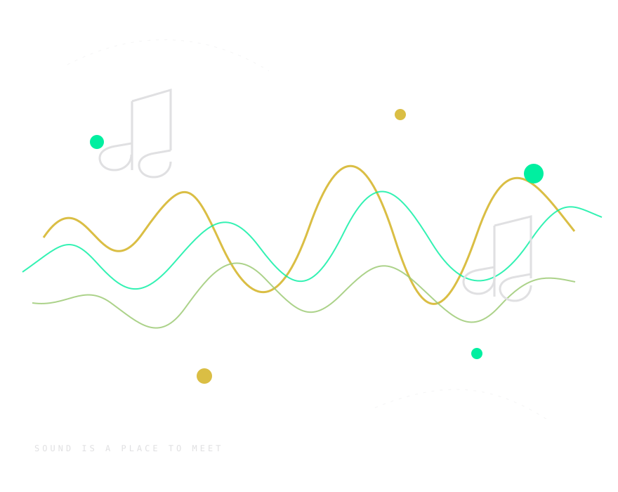

x
xiao
Programação · QA macOS
UM ESTÚDIO CRIATIVO DO STUDIO POMAR
Ferramentas abertas para criar com voz sintetizada. Do primeiro fonema ao último acorde, sua ideia conduz a sessão.
CÓDIGO ABERTO·Rust·UTAU / OpenUtau


UM POMAR DE POSSIBILIDADES
Studio Pomar é uma equipe independente que desenvolve ferramentas para música e síntese vocal. Kamafeu é nosso espaço de criação: um editor open source para UTAU e OpenUtau, feito para deixar o processo musical mais próximo de quem está compondo.
AS PESSOAS POR TRÁS DO POMAR
Programação · QA macOS
Direção de arte
Bug reports · QA Linux
Testes · QA Windows e Linux
Papéis conforme publicados no README do projeto. xiao também realiza testes em macOS.
CONHEÇA O KAMAFEU
Componha, ajuste pitch e fonemas e renderize com seu voicebank. Uma workstation vocal aberta, construída em Rust para projetos UTAU e OpenUtau.
Explore o projeto↗Notas, portamentos, vibrato e curvas de pitch contínuas.
Controle de fonemas, oto.ini e ferramentas de fonemização.
Motores nativos e suporte a ferramentas externas compatíveis.
Importe e exporte formatos usados na criação vocal.
ENCONTRE SEU PRÓXIMO PASSO
Kamafeu 3.0 Calafate está em estabilização e é distribuído como pré-release. Consulte notas e pacotes disponíveis para sua plataforma.
Ou experimente Kamafeu Web↗Código aberto para compor, experimentar e compartilhar.